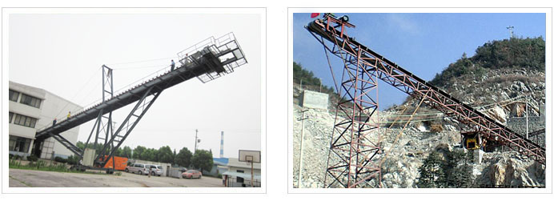

皮带输送机也叫带式输送机或胶带输送机，是组成有节奏的流水作业线所不可缺少的经济型物流输送设备。皮带机按其输送能力可分为重型皮带机(如矿用皮带输送机)，轻型皮带机如用在电子塑料，食品轻工，化工医药等行业。皮带输送机具有输送能力强，输送距离远，结构简单易于维护等特点，能方便地实行程序化控制和自动化操作。皮带输送机运用输送带的连续或间歇运动来输送100KG以下的物品或粉状、颗状物品，其运行高速、平稳，噪音低，并可以上下坡传送。
我公司生产的皮带输送机属于矿用皮带输送机，具有输送量大、结构简单、维修方便、部件标准化等优点，它广泛应用于矿山、冶金、煤炭等部门，用来输送松散物料或成件物品，根据输送工艺要求，可以单台输送，也可多台组成或与其他输送设备组成水平或倾斜的输送系统，以满足不同布置形式的作业线需要。胶带输送即可在环境温度－20℃至＋40℃范围内使用，输送物料的温度在50℃以下。
常用的皮带输送机可分为:普通帆布芯皮带输送机、钢绳芯高强度皮带输送机、全防爆下运皮带输送机、难燃型皮带输送机、双速双运皮带输送机、可逆移动式皮带输送机、耐寒皮带输送机等等。
用途：皮带输送机适用于输送堆积密度小于1.67/吨/立方米，易于掏取的粉状、粒状、小块状的低磨琢性物料及袋装物料，如煤、碎石、砂、水泥、化肥、粮食等。被送物料温度小于60℃。其机长及装配形式可根据用户要求确定，传动可用电滚筒，也可用带驱动架的驱动装置。
皮带输送机结构组成：
皮带输送机可输送的物料种类繁多，既可输送各种散料，也可输送各种纸箱、包装袋等单件重量不大的件货，用途广泛。结构形式多样，有槽型皮带机、平型皮带机、爬坡皮带机、侧倾皮带机、转弯皮带机等多种形式，输送带上还可增设推板、侧挡板、裙边等附件、能满足各种工艺要求。输送带有橡胶、帆布、PVC、PU等多种材质，除用于普通物料的输送外，还可满足耐油、耐腐蚀、防静电等有特殊要求物料的输送。
皮带输送机性能特点：
输送平稳，物料与输送带间没有相对运动，能够避免对输送物的损坏。与其它输送机相比噪音较小，适合于工作环境要求比较安静的场合。结构简单、便于维护；能耗较小，使用成本低。
皮带输送机技术参数：
胶带宽度(mm) |
输送长度（m）
功率(Kw) |
输送速度(m/S) |
输送量 (t/h) |
||
400 |
≤12/2.2 |
12-20/2.2-4 |
20-25/3.5-7.5
|
1.25-2.0 |
30-60 |
500 |
≤12/3 |
12-20/3-5.5 |
30-30/5.5-7.5
|
1.25-2.0
|
40-80 |
650 |
≤12/4 |
12-20/4-5.5 |
20-30/5.5-11
|
1.25-2.0
|
80-120 |
800 |
≤6/4 |
10-15/4-5.5 |
15-30/5.5-15
|
1.25-2.0
|
120-200 |
1000 |
≤10/5.5 |
10-20/5.5-11 |
20∽40/11-22
|
1.25-2.0
|
200-320 |
1200 |
≤10/7.5 |
10-20/7.5-15 |
20-40/15-30
|
1.25-2.0
|
320-480 |